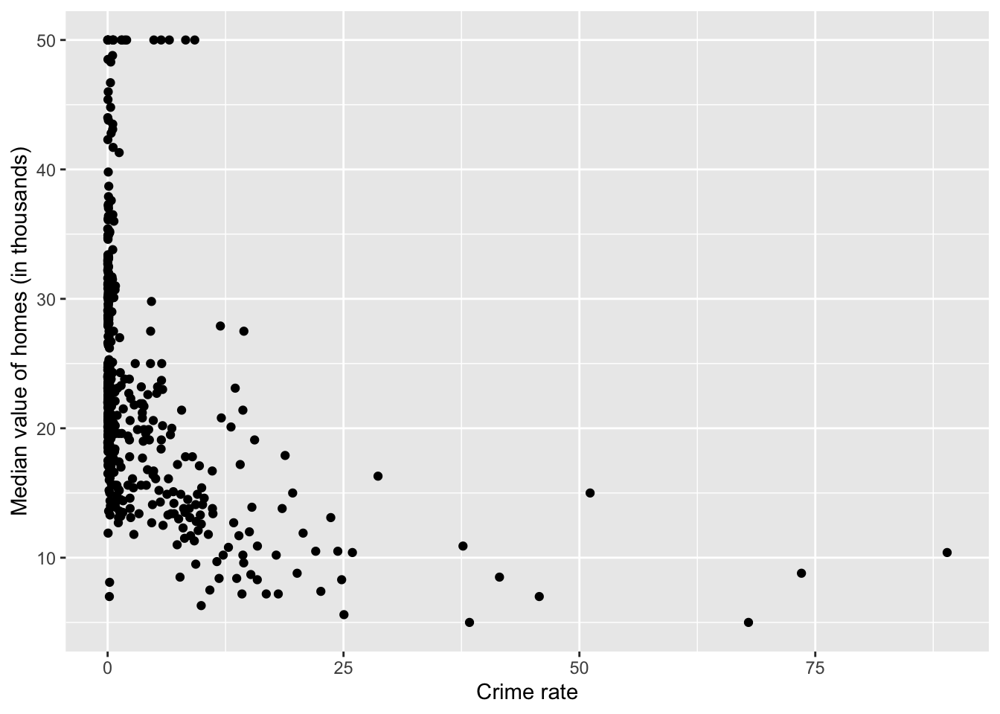
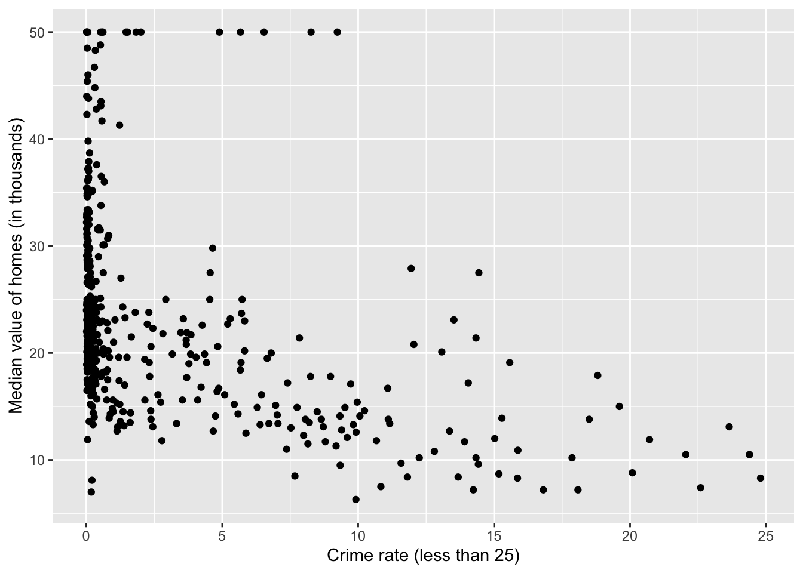
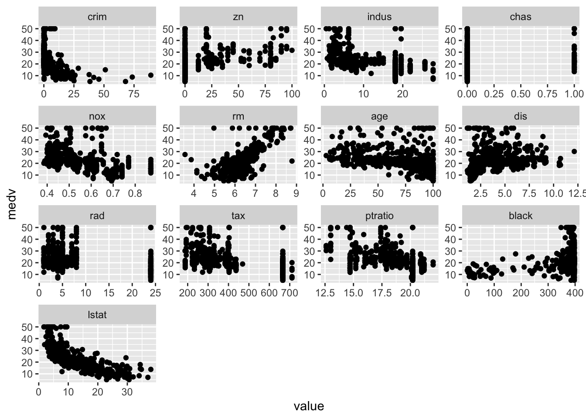
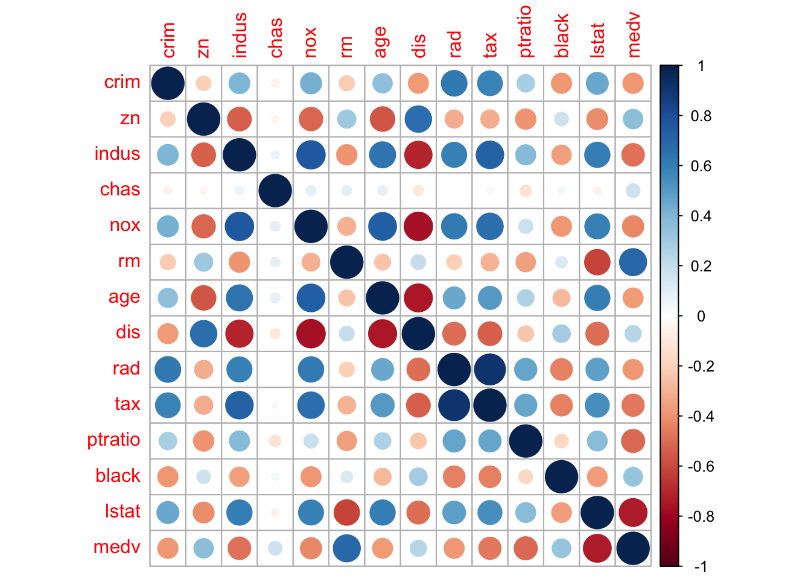

num_vec = c(1, 2, 3) # a vector of numbers
char_vec = c("I", "love", "econ") # a vector of charsR provides two basic structures: vector and list.
We have seen how to create R vectors using the combine function c.
num_vec = c(1, 2, 3) # a vector of numbers
char_vec = c("I", "love", "econ") # a vector of charsR vectors are designed as a simple data structure.
char, numeric).diff_types_vec = c(1, "a", TRUE)
diff_types_vec[1] "1" "a" "TRUE"1 (a numeric variable) and TRUE (a boolean variable) to characters.nested_vec = c(1, c(10, 15), c(1,3, c(2,6)))
nested_vec[1] 1 10 15 1 3 2 6c(1,c(3,4)) is the same as c(1, 3, 4).If you need an object containing variables of different types, use lists.
my_list = list(1, "a", TRUE)
my_list[[1]]
[1] 1
[[2]]
[1] "a"
[[3]]
[1] TRUEThere are two ways to extract elements from a list:
my_list[[1]]: this returns a number 1my_list[1]: this returns a list list(1)Lists can be nested:
nested_list = list(1, "a", list(TRUE, 2))
nested_list[[1]]
[1] 1
[[2]]
[1] "a"
[[3]]
[[3]][[1]]
[1] TRUE
[[3]][[2]]
[1] 2When we are doing statistical computations (such as matrix multiplication and estimating parameters), use vectors. We only deal with numeric numbers in this case.
Lists are more sophisticated than vectors. We use lists when we want to store verious kinds of information in a single object.
my_lm is indeed a list:my_lm = lm(y ~ x, data = my_data)Dataframe is a special kind of list. Like list, it can store values of different kinds.
We use data.frame() to create a dataframe:
df = data.frame(
name = c("Alice", "Bob", "Cindy"),
age = c(20, 23, 29),
gender = c("F", "M", "F")
)
df name age gender
1 Alice 20 F
2 Bob 23 M
3 Cindy 29 Fdf prints like an Excel sheet.To extract the name information in df, use df$name which works the same with df[["name"]]:
df$name[1] "Alice" "Bob" "Cindy"This example of linear regression is based on Intro to Statistical Learning (ISLR) ch3.6. It involves the Boston data set which pertains to Housing Values in Suburbs of Boston.
The Boston data set is found in the MASS package.
library(MASS)After loading MASS, the dataset Boston is in your R environment. Specifically, Boston is an object in R of type list (or dataframe here).
typeof(Boston)[1] "list"dim(Boston)[1] 506 14To get some feeling about the Boston dataset:
run names(Boston), head(Boston), str(Boston), or summary(Boston)
run ?Boston to see detailed documentation of the Boston dataset in MASS
?Bostoncrim
per capita crime rate by town.
zn
proportion of residential land zoned for lots over 25,000 sq.ft.
indus
proportion of non-retail business acres per town.
chas
Charles River dummy variable (= 1 if tract bounds river; 0 otherwise).
nox
nitrogen oxides concentration (parts per 10 million).
rm
average number of rooms per dwelling.
age
proportion of owner-occupied units built prior to 1940.
dis
weighted mean of distances to five Boston employment centres.
rad
index of accessibility to radial highways.
tax
full-value property-tax rate per $10,000.
ptratio
pupil-teacher ratio by town.
black
1000*(Bk - 0.63)^2, where Bk is the proportion of blacks by town.
lstat
lower status of the population (percent).
medv
median value of owner-occupied homes in $1000s.Another (much better) way to explore a dataset is to use plots.
library(ggplot2)
qplot(crim, medv, data=Boston,
xlab="Crime rate",
ylab="Median value of homes (in thousands)")Warning: `qplot()` was deprecated in ggplot2 3.4.0.
Based on the plot, it seems we should focus on those observations with crim < 25 in plotting.
library(dplyr)
data_subset = tibble(crim=Boston$crim, medv=Boston$medv)
data_subset = filter(data_subset, crim<25)Here I use the dplyr package which provides some useful “verbs” (functions) for data manipulation. If you use the pipe operator |>, an equivalent (but more readable) way is:
df = as_tibble(Boston) |>
select(crim, medv) |>
filter(crim<25)qplot(crim, medv, data=df,
xlab="Crime rate (less than 25)",
ylab="Median value of homes (in thousands)")
Plot each feature against medv:
library(reshape2)
bosmelt <- melt(Boston, id="medv")
ggplot(bosmelt, aes(x=value, y=medv))+
facet_wrap(~variable, scales="free")+
geom_point()
Lastly, we compute and visualize the correlation matrix:
corr_m = cor(Boston)
round(corr_m, 2) crim zn indus chas nox rm age dis rad tax ptratio
crim 1.00 -0.20 0.41 -0.06 0.42 -0.22 0.35 -0.38 0.63 0.58 0.29
zn -0.20 1.00 -0.53 -0.04 -0.52 0.31 -0.57 0.66 -0.31 -0.31 -0.39
indus 0.41 -0.53 1.00 0.06 0.76 -0.39 0.64 -0.71 0.60 0.72 0.38
chas -0.06 -0.04 0.06 1.00 0.09 0.09 0.09 -0.10 -0.01 -0.04 -0.12
nox 0.42 -0.52 0.76 0.09 1.00 -0.30 0.73 -0.77 0.61 0.67 0.19
rm -0.22 0.31 -0.39 0.09 -0.30 1.00 -0.24 0.21 -0.21 -0.29 -0.36
age 0.35 -0.57 0.64 0.09 0.73 -0.24 1.00 -0.75 0.46 0.51 0.26
dis -0.38 0.66 -0.71 -0.10 -0.77 0.21 -0.75 1.00 -0.49 -0.53 -0.23
rad 0.63 -0.31 0.60 -0.01 0.61 -0.21 0.46 -0.49 1.00 0.91 0.46
tax 0.58 -0.31 0.72 -0.04 0.67 -0.29 0.51 -0.53 0.91 1.00 0.46
ptratio 0.29 -0.39 0.38 -0.12 0.19 -0.36 0.26 -0.23 0.46 0.46 1.00
black -0.39 0.18 -0.36 0.05 -0.38 0.13 -0.27 0.29 -0.44 -0.44 -0.18
lstat 0.46 -0.41 0.60 -0.05 0.59 -0.61 0.60 -0.50 0.49 0.54 0.37
medv -0.39 0.36 -0.48 0.18 -0.43 0.70 -0.38 0.25 -0.38 -0.47 -0.51
black lstat medv
crim -0.39 0.46 -0.39
zn 0.18 -0.41 0.36
indus -0.36 0.60 -0.48
chas 0.05 -0.05 0.18
nox -0.38 0.59 -0.43
rm 0.13 -0.61 0.70
age -0.27 0.60 -0.38
dis 0.29 -0.50 0.25
rad -0.44 0.49 -0.38
tax -0.44 0.54 -0.47
ptratio -0.18 0.37 -0.51
black 1.00 -0.37 0.33
lstat -0.37 1.00 -0.74
medv 0.33 -0.74 1.00library(corrplot) # visualizing the corr matrix
corrplot(corr_m)
We use the lm() function for linear regression. For example, the syntax lm(y ~ x1 + x2 + x3, data) fits a model with three predictors: .
Here the Boston dataset contains 13 variables. To perform a regression using all of the predictors, use the short-hand .:
fit_all = lm(medv ~ ., data = Boston)fit is a list containing all the regression info.summary(fit_all)
Call:
lm(formula = medv ~ ., data = Boston)
Residuals:
Min 1Q Median 3Q Max
-15.595 -2.730 -0.518 1.777 26.199
Coefficients:
Estimate Std. Error t value Pr(>|t|)
(Intercept) 3.646e+01 5.103e+00 7.144 3.28e-12 ***
crim -1.080e-01 3.286e-02 -3.287 0.001087 **
zn 4.642e-02 1.373e-02 3.382 0.000778 ***
indus 2.056e-02 6.150e-02 0.334 0.738288
chas 2.687e+00 8.616e-01 3.118 0.001925 **
nox -1.777e+01 3.820e+00 -4.651 4.25e-06 ***
rm 3.810e+00 4.179e-01 9.116 < 2e-16 ***
age 6.922e-04 1.321e-02 0.052 0.958229
dis -1.476e+00 1.995e-01 -7.398 6.01e-13 ***
rad 3.060e-01 6.635e-02 4.613 5.07e-06 ***
tax -1.233e-02 3.760e-03 -3.280 0.001112 **
ptratio -9.527e-01 1.308e-01 -7.283 1.31e-12 ***
black 9.312e-03 2.686e-03 3.467 0.000573 ***
lstat -5.248e-01 5.072e-02 -10.347 < 2e-16 ***
---
Signif. codes: 0 '***' 0.001 '**' 0.01 '*' 0.05 '.' 0.1 ' ' 1
Residual standard error: 4.745 on 492 degrees of freedom
Multiple R-squared: 0.7406, Adjusted R-squared: 0.7338
F-statistic: 108.1 on 13 and 492 DF, p-value: < 2.2e-16Here the summary output still contains lots of info. We can use summary(fit)$r.sq to see the .
summary(fit_all)$r.sq # short for summary(fit_all)[["r.sq"]][1] 0.7406427From the summary, age and indus seem to have high p-values.
We can run a regression excluding these two predictors:
fit_ex = lm(medv ~ . - age - indus, data=Boston)summary(fit_ex)
Call:
lm(formula = medv ~ . - age - indus, data = Boston)
Residuals:
Min 1Q Median 3Q Max
-15.5984 -2.7386 -0.5046 1.7273 26.2373
Coefficients:
Estimate Std. Error t value Pr(>|t|)
(Intercept) 36.341145 5.067492 7.171 2.73e-12 ***
crim -0.108413 0.032779 -3.307 0.001010 **
zn 0.045845 0.013523 3.390 0.000754 ***
chas 2.718716 0.854240 3.183 0.001551 **
nox -17.376023 3.535243 -4.915 1.21e-06 ***
rm 3.801579 0.406316 9.356 < 2e-16 ***
dis -1.492711 0.185731 -8.037 6.84e-15 ***
rad 0.299608 0.063402 4.726 3.00e-06 ***
tax -0.011778 0.003372 -3.493 0.000521 ***
ptratio -0.946525 0.129066 -7.334 9.24e-13 ***
black 0.009291 0.002674 3.475 0.000557 ***
lstat -0.522553 0.047424 -11.019 < 2e-16 ***
---
Signif. codes: 0 '***' 0.001 '**' 0.01 '*' 0.05 '.' 0.1 ' ' 1
Residual standard error: 4.736 on 494 degrees of freedom
Multiple R-squared: 0.7406, Adjusted R-squared: 0.7348
F-statistic: 128.2 on 11 and 494 DF, p-value: < 2.2e-16The syntax lstat:black tells R to include the interaction term .
The syntax lstat*age simultaneously include lstat, age, and the interaction term lstat:black as predictors:
summary(lm(medv ~ lstat*age, data=Boston))
Call:
lm(formula = medv ~ lstat * age, data = Boston)
Residuals:
Min 1Q Median 3Q Max
-15.806 -4.045 -1.333 2.085 27.552
Coefficients:
Estimate Std. Error t value Pr(>|t|)
(Intercept) 36.0885359 1.4698355 24.553 < 2e-16 ***
lstat -1.3921168 0.1674555 -8.313 8.78e-16 ***
age -0.0007209 0.0198792 -0.036 0.9711
lstat:age 0.0041560 0.0018518 2.244 0.0252 *
---
Signif. codes: 0 '***' 0.001 '**' 0.01 '*' 0.05 '.' 0.1 ' ' 1
Residual standard error: 6.149 on 502 degrees of freedom
Multiple R-squared: 0.5557, Adjusted R-squared: 0.5531
F-statistic: 209.3 on 3 and 502 DF, p-value: < 2.2e-16To include the quadratic term X^2, use I(X^2):
I() is needed since the hat symbol ^ has a special meaning in a formula.fit_nonlinear = lm(medv~lstat+I(lstat^2), data = Boston)
summary(fit_nonlinear)
Call:
lm(formula = medv ~ lstat + I(lstat^2), data = Boston)
Residuals:
Min 1Q Median 3Q Max
-15.2834 -3.8313 -0.5295 2.3095 25.4148
Coefficients:
Estimate Std. Error t value Pr(>|t|)
(Intercept) 42.862007 0.872084 49.15 <2e-16 ***
lstat -2.332821 0.123803 -18.84 <2e-16 ***
I(lstat^2) 0.043547 0.003745 11.63 <2e-16 ***
---
Signif. codes: 0 '***' 0.001 '**' 0.01 '*' 0.05 '.' 0.1 ' ' 1
Residual standard error: 5.524 on 503 degrees of freedom
Multiple R-squared: 0.6407, Adjusted R-squared: 0.6393
F-statistic: 448.5 on 2 and 503 DF, p-value: < 2.2e-16What’s the difference between vector and list? Explain in your own words.
m = matrix(1:4, nrow = 2). Is m a vector or a list?
Is the dataset Boston a vector or a list?
Read about the dataset (?Boston) and answer the following questions.
How to know the number of rows and columns in dataset Boston?
Make some pairwise scatterplots of the predictors (columns) in this data set. Describe your findings.
Are any of the predictors associated with crim (per capita crime rate)? If so, explain the relationship.
Do any of the suburbs of Boston appear to have particularly high crime rates? Tax rates? Pupil-teacher ratios? Comment on the range of each predictor.
How many of the suburbs in this data set bound the Charles river?